Leia na ordem se é sua primeira partida. Depois, use como consulta.
1O jogo em 1 minuto
2Começando uma partida
3A tela do jogo
4Controles
5Recursos
6População
7Construir a base
8Seus primeiros 10 minutos
9As tropas
10Guerra e combate
11Eras: a evolução da nação
12Melhorias e pesquisa
13Governando o país
14O Globo e a diplomacia
15Força aérea e mísseis
16Cidades, estradas e serviços
17Energia elétrica
18Grandes Projetos e Programa Espacial
19O bônus de cada país
20Dicas de estratégia
21Glossário
Como ler os números deste guiaOs custos e valores mostrados aqui são os do jogo no momento em que este guia foi feito. O jogo é atualizado com frequência: se algum número estiver diferente, vale sempre o que aparece na tela da partida.
Símbolos usados
💡 DicaUm atalho ou ideia que ajuda a jogar melhor.
⚠ AtençãoUm erro comum que pode custar a partida.
ℹ Saiba maisUm detalhe para quem quer entender a fundo.
1O jogo em 1 minuto
Você é o líder de um país real. Ao mesmo tempo, governa a nação e comanda as tropas no campo de batalha.
🗺
O teatro de operações
O mapa 3D onde tudo acontece na prática: você coleta recursos, constrói a base, forma a população e treina o exército. É a parte "jogo de estratégia em tempo real".
🏛
O governo
O painel da sua nação: impostos, gastos, dívida, pesquisa, aprovação do povo e diplomacia com outros países. Um dia de jogo passa a cada segundo.
As duas partes estão ligadas. O orçamento de defesa manda suprimentos para a base; a verba de obras paga as melhorias; as baixas na guerra derrubam a aprovação; e um povo revoltado pode derrubar o seu governo.
Como vencer
Vitória
Como conseguir
🏆 Militar
Destruir o Centro de Comando (o QG) de todos os inimigos. É o jeito mais comum.
🗺 Territorial
Controlar 70% de todo o território do mapa por 4 minutos seguidos.
⚖ Política
Fazer o governo inimigo cair: se a estabilidade dele ficar abaixo de 10 por 60 dias seguidos, ele é derrotado.
⚠ Como perderSe o seu Centro de Comando for destruído, você perde na hora. Proteja-o sempre.
O que torna este jogo diferente
Países reais com dados reais. PIB, dívida, inflação e gastos militares vêm do Banco Mundial e do FMI. Cada país começa diferente.
Guerra precisa ser declarada. Sem declaração de guerra, ninguém pode atacar ninguém.
Recursos são escassos. Falta recurso no começo, e você precisa escolher onde gastar.
A nação evolui por eras, da Guerra Fria ao Futuro Próximo, e muda de aparência a cada era.
2Começando uma partida
Do menu principal até o primeiro segundo da partida.
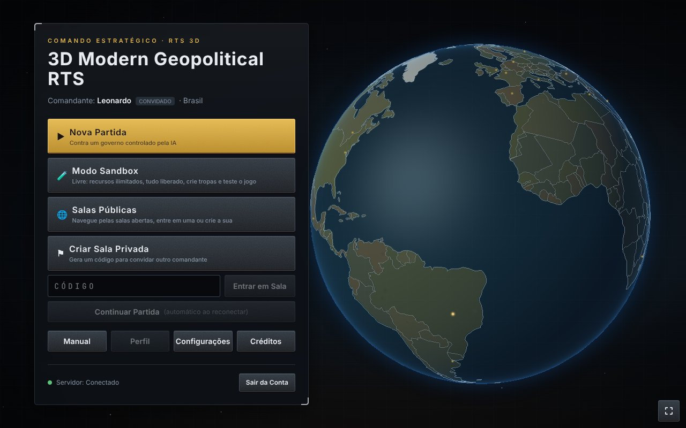
O menu principal.
Modos de jogo
Nova Partida — você contra governos controlados pelo computador (IA). Ótimo para aprender.
Modo Sandbox — recursos infinitos e tudo liberado. Serve para testar tropas e construções sem pressão.
Salas Públicas — abre a lista de salas abertas por outros comandantes: veja o nome, o mapa, os países e as vagas, e clique em Entrar. Ali também dá para criar uma sala pública ou entrar com o código de uma sala privada.
Criar Sala Privada — gera um código; seus amigos entram com ele em Entrar em Sala.
Continuar Partida — volta a uma partida em andamento. A partida é salva sozinha.
💡 Primeira vez?O botão Manual mostra um resumo do jogo em 7 cartões curtos.
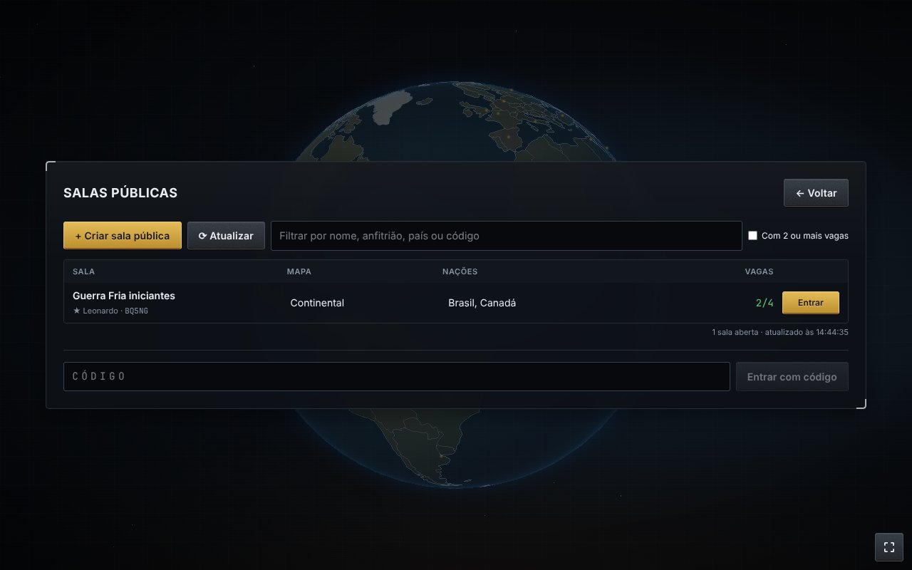
Salas Públicas: as salas abertas por outros comandantes, com nome, mapa, países e vagas. Clique em Entrar.
A sala da partida
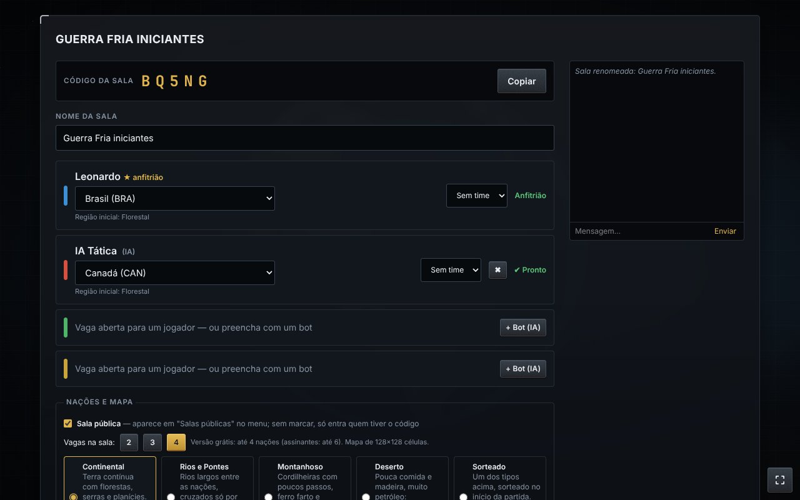
A sala multijogador: nome da sala, código, países, vagas (com um bot na segunda), sala pública e tipo de mapa.
Opção
O que significa
Seu país
Cada país tem economia própria, uma região inicial (florestal, petrolífera…) e um bônus único (capítulo 19).
Nome da sala
Só nas salas multijogador: o anfitrião dá o nome que aparece na lista de salas públicas (até 32 letras).
Sala pública
Marcada, a sala aparece em Salas Públicas para qualquer comandante entrar. Desmarcada, só entra quem tiver o código.
Vagas na sala
De 2 a 4 na versão grátis (até 6 para assinantes). Cada vaga fica aberta para um jogador ou o anfitrião a preenche com um bot (IA); o ✖ devolve a vaga. Dá para formar times: quem está no mesmo time começa aliado.
Tipo de mapa
Continental (o padrão), Rios e Pontes (passagens estreitas), Montanhoso (muito ferro, defesa forte), Deserto (pouca comida, muito petróleo) ou Sorteado.
Regra do teatro
Paridade: todos os países com a mesma força econômica no campo (recomendado). Escala real: países ricos têm mais suprimentos.
Dificuldade
Veja a tabela da próxima página.
Níveis de dificuldade
No começo existe um período de preparo: a IA não declara guerra e você monta a economia em paz. Quanto mais difícil, mais curto ele é.
Fácil
Normal
Difícil
Brutal
Preparo
12 min
8 min
5 min
3 min
Primeiro ataque da IA
perto dos 14 min
perto dos 10 min
perto dos 8 min
perto dos 6 min
Ataques seguintes
pequenos e espaçados (a cada 6 min)
médios (a cada 4 min)
grandes (a cada 3 min)
enormes (a cada 2,5 min)
Incidentes de fronteira
não
sim
sim
sim
Aviões / mísseis da IA
não / não
sim / não
sim / sim
sim / sim
Vantagem da IA
—
—
—
+15% de coleta
⚠ O primeiro ataque vem cedoLogo depois do preparo, a IA ataca com o que tiver, mesmo que sejam só 3 ou 4 soldados. É um teste da sua defesa: quem tem alguns soldados e uma torre perto da base segura fácil. Depois disso, os ataques ficam maiores a cada onda.
ℹ A IA joga limpoEm todos os níveis a IA segue as mesmas regras que você e também não enxerga através da névoa de guerra. O único extra é o bônus de coleta do Brutal, que aparece na sala.
⚠ Incidentes de fronteiraA partir do Normal, durante o preparo, a IA manda 2 ou 3 soldados para assediar fazendas e serrarias na borda do seu território. Não é guerra declarada, mas há troca de tiros por 75 segundos. Tenha alguns soldados por perto.
O que você recebe no começo
🏢
Centro de Comando
A sua capital. Forma cidadãos, guarda suprimentos e define o território.
👷
6 cidadãos
A mão de obra que vai trabalhar nas fazendas, serrarias e pedreiras.
🔭
1 Explorador
Batedor rápido que enxerga longe. Use-o para achar recursos e o inimigo.
⚡
Termelétrica a carvão
Ligada ao Centro de Comando por uma estrada curta com postes. Dá luz para os primeiros quartéis e fábricas (capítulo 17).
Além disso: 200 suprimentos, 100 de comida, 150 de madeira, 60 de pedra, 50 de petróleo e 160 de carvão. Parece muito, mas acaba rápido — gaste com cuidado.
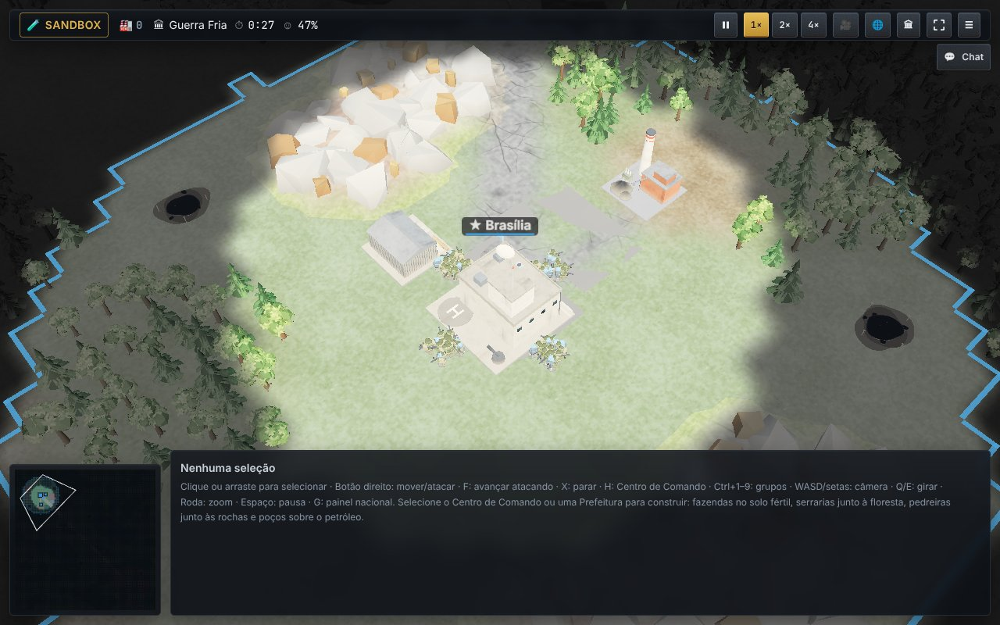
O começo da partida: o Centro de Comando (com o nome da sua capital), a termelétrica ligada a ele por uma estrada com postes, a linha azul do seu território, rochas, floresta, solo fértil (marrom) e as jazidas de petróleo (manchas escuras).
3A tela do jogo
Tudo o que você precisa ver fica na barra de cima e no painel de baixo.
A barra de recursos
123456789
1US$ — a verba de obras do governo (paga melhorias, eras e aviões).
2🏭 — quantas coisas estão sendo produzidas agora.
3Suprimentos
4Comida
5Madeira
6Pedra
7Ferro
8Petróleo
9População (passe o mouse para detalhes).
Depois do petróleo aparecem o carvão e o ⚡ medidor de energia: "28/48" quer dizer 28 de consumo atendido de 48 de geração. Ele fica vermelho quando alguma construção está parada sem luz. Em telas largas, aparece também a hora e o tempo (☀ 10:15, 🌧, ❄, 🌙).
ℹ Como ler cada recurso231 /1500 +2,9 quer dizer: você tem 231, cabe no máximo 1.500 e está ganhando 2,9 por segundo. Número vermelho = você está perdendo esse recurso (a comida, por exemplo, é consumida pela população).
Os botões da direita
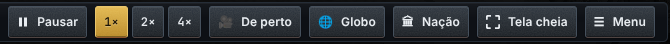
1234567
1Pausar (tecla Espaço).
2Velocidade 1×, 2× ou 4× (só contra a IA).
3De perto — câmera cinematográfica perto das tropas.
4Globo — diplomacia e guerra (Tab).
5Nação — o painel do governo (G).
6Tela cheia
7Menu — salvar, sair, configurações.
O painel de baixo
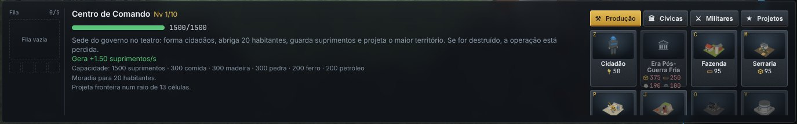
Com o Centro de Comando selecionado: à esquerda, a fila de produção; no meio, a vida, a descrição e o que o prédio faz; à direita, os botões de construção em abas (Produção, Cívicas, Militares e Projetos).
Clima, dia e noite
A partida tem um dia completo a cada 16 minutos: manhã, entardecer dourado, uns 4 minutos de noite (céu estrelado e janelas acesas) e amanhecer. O clima depende dos países da sala: neve se todas as nações forem da Europa (a neve se acumula no chão e nos telhados), chuvas fortes com raios se algum país for tropical, chuva rara no mapa Deserto. O clima é só visual, com uma exceção: a usina solar não gera à noite.
No canto inferior esquerdo fica o minimapa: clique nele para levar a câmera até aquele ponto. Áreas escuras ainda não foram exploradas.
4Controles
O jogo funciona no computador, no celular e no tablet.
🖱 Computador
Ação
Como fazer
Selecionar
Clique esquerdo. Arraste para selecionar vários. Shift adiciona. Clique duplo seleciona todos do mesmo tipo.
Mover / atacar
Clique direito no chão (mover) ou no inimigo (atacar).
Avançar atacando
F e clique no destino: as tropas atiram em tudo pelo caminho.
Parar
X
Ponto de reunião
Selecione o quartel ou a fábrica e clique direito no chão: as tropas novas vão para lá.
Grupos
Ctrl+1…9 grava o grupo; 1…9 seleciona.
Câmera
WASD ou setas movem · Q/E giram · roda do mouse aproxima · H volta ao QG.
Painéis
G Nação · Tab Globo · F10 menu · Enter chat · Espaço pausa.
Cancelar produção
Del cancela o último item da fila.
Cada botão de construção e de tropa mostra a sua tecla de atalho no canto (por exemplo C Fazenda, M Serraria, Z Cidadão).
📱 Celular e tablet
Ação
Gesto
Selecionar
Toque curto. Dois toques selecionam todos do mesmo tipo. Ferramenta Área + arrastar seleciona vários.
Dar uma ordem
Toque longo (meio segundo) no destino ou no inimigo, ou ferramenta Ordem + toque.
Construir
Toque no QG → botão da construção → toque no mapa → toque de novo no mesmo lugar ou em Confirmar.
Câmera
Arraste com um dedo · pinça para zoom · gire com dois dedos · botões Aproximar, Afastar, Girar e QG.
Cancelar
Botão Cancelar; Desmarcar limpa a seleção.
💡 No celular, use o botão de tela cheia para ganhar espaço. O jogo ignora toques muito curtos e movimentos pequenos para evitar ordens por engano.
5Recursos
Sete recursos movem a sua base. Cada um vem de um lugar diferente do mapa.
Recurso
De onde vem
Onde guarda
Para que serve
📦 Suprimentos
Renda fixa do Centro de Comando e das prefeituras, mais a logística do orçamento de defesa
Centro de Comando
Veículos, recrutas, várias construções
🌾 Comida
Fazenda no solo fértil (o chão marrom). Nunca acaba.
Silo
Cidadãos, infantaria e alimentar a população
🪵 Madeira
Serraria perto da floresta
Armazém
Quase todas as construções
🪨 Pedra
Pedreira perto das rochas
Armazém
Construções, torres, artilharia
⛓ Ferro
Mina nos veios de minério das montanhas
Armazém
Veículos, aviões, pesquisas
🛢 Petróleo
Poço em cima de uma jazida (mancha escura). Precisa de um Tanque de Petróleo por perto.
Tanque de Petróleo
Veículos, aviões, declaração de guerra
⚫ Carvão
Sai da Mina junto com o ferro (cerca de 1 de carvão para cada 7 de ferro)
Centro de Comando e Armazém
Combustível da Termelétrica (capítulo 17)
Como a coleta funciona
Posição importa. Cada coleta "pega" as células de recurso ao seu redor (a fazenda, até 8 de solo fértil; a serraria, até 10 árvores). Ao posicionar, o jogo mostra quantas células você vai pegar e quanto vai render. Duas coletas não dividem as mesmas células.
Precisa de gente. Uma coleta só rende cheia com 6 trabalhadores (o poço, com 4). Com 3, rende metade.
Armazém cheio = produção parada. Construa silos, armazéns e tanques antes de lotar.
Depósitos acabam. Floresta, rocha, minério e petróleo são finitos. Quando um acaba, construa outra coleta em outro lugar. Só o solo fértil é infinito.
⚠ Cada prédio igual fica mais caroCada construção nova do mesmo tipo custa 18% a mais que a anterior. A 5ª fazenda custa quase o dobro da 1ª. Por isso, pense antes de construir.
Os bens industriais
Na era 2 você pode construir a Refinaria (petróleo → ⛽ combustível) e a Siderúrgica (ferro → 🔩 aço). Esses bens substituem parte do custo dos veículos e aviões: 1 de aço vale 2 de ferro, e 1 de combustível vale 2 de petróleo. Ou seja, a cadeia dobra o rendimento do seu ferro e do seu petróleo.
6População
Pessoas são o recurso mais valioso do jogo.
👷
Cidadão
Formado no Centro de Comando (Z) por 50 de comida, em 10 segundos. Trabalha nas construções. Sem cidadãos, nada produz. Cidadãos sem trabalho entram sozinhos nos prédios com vaga.
🪖
Recruta
Alistado na Base Militar (60 de comida e 40 de suprimentos). Fica na reserva e é a tripulação de toda tropa: cada soldado, tanque ou avião usa 1 recruta.
Moradia
Construção
Moradias
Observação
Centro de Comando
20
Já vem pronto
Casa
+10
Barata; amplia um pouco a fronteira
Prédio Residencial
+20
Era 2; tem manutenção (sem pagar, não abriga ninguém)
Prefeitura
+10
Também funda uma cidade (capítulo 16)
O teto absoluto é de 200 habitantes (cidadãos + militares).
Todo mundo come
Cada habitante consome comida o tempo todo. Se a comida acabar, há fome e toda a produção cai pela metade. Por isso a comida aparece em vermelho na barra: é o consumo.
💡 A grande escolhaCada recruta é uma pessoa a menos trabalhando. Exército grande demais cedo = economia fraca. Economia grande demais sem exército = alvo fácil. Equilibrar os dois é o coração do jogo.
⚠ Erro comumEsquecer de fazer casas. Quando a população chega ao limite de moradia, você não forma mais ninguém — nem cidadãos, nem recrutas.
7Construir a base
Selecione o Centro de Comando (ou uma Prefeitura) para abrir o menu de construção.
O território
A linha colorida no mapa é a sua fronteira. Você só constrói dentro dela. O território cresce com o Centro de Comando (e suas melhorias), prefeituras, torres, bases, fábricas e casas. Sem guerra declarada, tropas estrangeiras não podem entrar no seu território.
O menu de construção tem 5 abas
Aba
O que tem
⚒ Produção
Cidadão, avanço de era, Fazenda, Serraria, Pedreira, Mina, Poço, Tanque de Petróleo, Armazém, Silo, Refinaria e Siderúrgica.
⚡ Energia
Termelétrica a Carvão, Parque Eólico (era 2) e Usina Solar (era 3).
Base Militar, Fábrica de Veículos, Torre, Centro de Pesquisa Militar, Bateria Antiaérea, Base Aérea e Silo de Mísseis.
★ Projetos
Os Grandes Projetos Nacionais da última era (capítulo 18).
Como posicionar
Clique no botão da construção. Um "fantasma" do prédio segue o mouse.
Verde = pode construir; vermelho = não pode (o jogo diz o motivo). Para coletas, o painel mostra quantas células de recurso o prédio vai pegar. Para prédios que usam luz, a área com energia aparece amarela no chão e o painel avisa "⚡ Com energia aqui" ou "⚠ Sem energia aqui".
Clique para confirmar. A obra começa e os recursos são descontados. Dica: deixe corredores entre os prédios, para as tropas passarem.
Uma base em desenvolvimento na Guerra Fria: Centro de Comando (Brasília) no meio, fazendas, poço de petróleo com tanque, casas, prédios residenciais, quartel, fábrica, silos, armazém e as primeiras tropas.
8Seus primeiros 10 minutos
Uma ordem simples que funciona bem em qualquer país. Depois que pegar o jeito, crie a sua.
Mande o Explorador passear. Selecione-o e clique longe, em direção ao centro do mapa. Ele revela recursos e mostra onde está o inimigo.
Forme cidadãos sem parar no Centro de Comando (Z), enquanto houver comida e moradia.
Fazenda (C) no solo fértil e Serraria (M) na floresta. Essas duas sustentam todo o resto.
Pedreira (P) nas rochas e uma Casa antes de lotar a moradia.
Base Militar: aliste alguns recrutas e treine 3 ou 4 infantarias para se defender dos incidentes de fronteira.
Mina (ferro) e Poço de Petróleo com um Tanque de Petróleo ao lado. Sem eles, nada de veículos.
Silo e Armazém quando a barra de algum recurso estiver quase cheia.
Melhore o Centro de Comando (botão ⬆ no painel). Ele libera níveis mais altos dos outros prédios e as eras.
Fábrica de Veículos e, no nível 3 do QG, avance para a era 2.
Antes do fim do preparo, tenha um pequeno exército perto da base e uma Torre de Vigilância na direção do inimigo. No Normal, o primeiro ataque da IA chega perto dos 10 minutos.
💡 Olhe a barra de cima o tempo todoO recurso que mais falta é o seu gargalo. Se é madeira, faça outra serraria; se é comida, outra fazenda. Recurso sobrando no limite do armazém é desperdício: gaste-o ou venda-o no mercado interno (capítulo 13).
💡 Botão apagado?Quando um botão está cinza, passe o mouse (ou toque) nele: o jogo explica o motivo, por exemplo "faltam 20 de petróleo", "sem recruta" ou "requer era 2".
ℹ E o governo?Nos primeiros minutos, deixe o governo como está. Quando a base estiver rodando, abra o painel Nação (G) e escolha uma pesquisa. O capítulo 13 explica o resto.
9As tropas
Cada tropa tem um papel. Nenhuma vence sozinha: misture.
Tropa
Era
Onde
Boa contra
Fraca contra / observação
Explorador
1
Base Militar
Ninguém — serve para ver
Quase não luta; rápido e com visão longa
Infantaria
1
Base Militar
Infantaria
Blindados: o fuzil quase não fere veículos
Veículo Blindado
1
Fábrica
Infantaria; dar visão à artilharia
Tanques. Mantém o suprimento das tropas em terra inimiga
Tanque
2
Fábrica
Quase tudo de perto
Infantaria Antitanque; lento na floresta e na lama
Artilharia
2
Fábrica
Tudo de longe (alcance 16)
Frágil e cega: precisa de alguém dando visão
Infantaria Antitanque
2
Base Militar
Veículos (dano triplo)
Infantaria
Engenheiro de Combate
2
Base Militar
— (apoio)
Minas, estradas, obstáculos; fraco em combate
Forças Especiais
3
Base Militar
Infantaria e edifícios
Rápidas e precisas; caras
Antiaérea Móvel
3
Fábrica
Aviões e mísseis
Fraca contra tropas terrestres
Phalanx CIWS Móvel
3
Fábrica
Foguetes em voo, aviões e mísseis; infantaria
Blindados: o Gatling de 20 mm quase não os fere
Lança-Foguetes
3
Fábrica
Bases e grupos (alcance 24, dano em área)
Não atira de perto; recarga lenta; frágil
Tanque Moderno
4
Fábrica
Tudo
Muito caro; Antitanque ainda dói
O triângulo básico
A seta aponta de quem vence para quem perde. Artilharia e foguetes ficam atrás, protegidos, atirando de longe.
Veterania
Cada abate conta para a patente da tropa. Tropas experientes valem ouro — tire-as do combate quando estiverem fracas.
Patente
Abates
Bônus
Recruta
0
—
Veterano
2
+10% de dano, +8% de vida
Elite
5
+20% de dano, +16% de vida
Herói
10
+30% de dano, +24% de vida
Um exército misto do Futuro Próximo: Tanques Modernos, tanques, artilharia, Antiaérea Móvel, Lança-Foguetes e infantaria.
Produzindo tropas
Tenha recrutas na reserva (aliste na Base Militar).
Selecione a Base Militar (infantaria) ou a Fábrica de Veículos (veículos) e clique na tropa. Ela entra na fila (até 5 itens).
Clique direito no chão com o prédio selecionado para definir o ponto de reunião.
Pesquisa militar
Algumas tropas precisam ser liberadas no Centro de Pesquisa Militar (T), além de estarem na era certa: Blindados sobre lagartas (Tanque), Artilharia de campanha, Armas antitanque, Engenharia de combate, Defesa antiaérea móvel, Operações especiais, Lança-foguetes múltiplos e Blindados de nova geração (Tanque Moderno). O botão de uma tropa bloqueada mostra o que falta.
Modernização
Pesquisas nacionais de defesa liberam pacotes de modernização (blindagem, mira, motor…). Leve a tropa até uma Base Militar ou Fábrica, selecione-a e clique no pacote. Ela fica algum tempo fora de combate enquanto recebe o equipamento.
💡 Exército para começar: 4 infantarias + 2 blindados; depois, tanques, antitanques e 2 artilharias atrás de tudo.
10Guerra e combate
Nada de ataque surpresa: a guerra precisa ser declarada.
Declarar guerra
Abra o Globo (Tab) e clique no país inimigo.
Escolha Declarar guerra. Uma janela mostra o custo antes de confirmar.
Custo: 150 suprimentos, 50 de petróleo, 0,2% do PIB e 3 pontos de aprovação. Os tratados com aquele país são rompidos e os aliados dele podem sancionar você.
Sem guerra, as ordens de ataque são recusadas e as tropas não atiram sozinhas. A IA segue a mesma regra: ela também precisa declarar guerra antes de atacar.
Névoa de guerra
Você só vê o que suas tropas e prédios enxergam. Áreas nunca exploradas ficam escuras; as exploradas, mas fora de vista, ficam apagadas, e os prédios inimigos ali aparecem como da última vez em que foram vistos.
Atrito: lutar longe de casa cansa
Tropas em território inimigo perdem vida aos poucos. Para evitar, mantenha um Veículo Blindado por perto: ele carrega os suprimentos e protege o grupo do atrito.
Minas e obstáculos
O Engenheiro de Combate instala minas antitanque: elas explodem só com veículos e são invisíveis para o inimigo. Ele também detecta e remove minas inimigas por perto (sozinho, sem botão) e ergue obstáculos antitanque que bloqueiam a passagem.
⚠ Estradas são o lugar favorito para minasAvançando por uma estrada até a base inimiga? Mande um engenheiro ou infantaria na frente.
Táticas que funcionam
Avance atacando (F) em vez de só mover: as tropas param para atirar em quem aparecer.
Visão primeiro. Artilharia e Lança-Foguetes só atiram no que alguém vê. Use blindados, exploradores, torres ou aviões de reconhecimento.
Ataque a economia. Fazendas, serrarias e poços inimigos costumam estar longe do QG e mal defendidos.
Recue tropas feridas; um Hospital cura quem está na área dele.
Grupos com Ctrl+número: um para o exército, outro para a artilharia.
11Eras: a evolução da nação
A partida avança por quatro eras. Cada uma muda a cara da sua base e libera tropas e construções novas.
Era 1 · início
Guerra Fria
Concreto e pintura gastos. Infantaria, Veículo Blindado, Explorador. Coleta, casas, Base Militar, Fábrica, Torre, Escola e Delegacia.
Era 2 · QG nível 3
Pós-Guerra Fria
Metal pré-fabricado e radares. Tanque, Artilharia, Antitanque, Engenheiro. Centro de Pesquisa, Prédio Residencial, Comércio, Porto, Ferrovia, Antiaérea, Hospital, Refinaria e Siderúrgica.
Era 3 · QG nível 5
Era Digital
Vidro e aço, painéis solares e antenas. Antiaérea Móvel, Phalanx CIWS Móvel, Forças Especiais, Lança-Foguetes. Base Aérea com caças, reconhecimento e cargueiros. Melhorias até o nível 8.
Era 4 · QG nível 7
Futuro Próximo
Compósito escuro, faixas de LED e drones. Tanque Moderno, bombardeiros, Silo de Mísseis e os Grandes Projetos. Melhorias até o nível 10.
Como avançar
Selecione o Centro de Comando e clique em Era …. É uma obra que custa recursos e US$ da verba de obras e exige o QG no nível mínimo. Durante a obra, o topo da tela mostra o progresso. Cancelar devolve 75%. Quando você avança, todos os jogadores são avisados.
A mesma base na Guerra Fria (esquerda) e no Futuro Próximo (direita): a nação inteira muda de visual.
💡 Avançar cedo ou tarde? Avançar cedo dá tropas melhores, mas consome recursos que poderiam virar exército. Sob ataque, defenda-se primeiro e avance quando estiver seguro.
12Melhorias e pesquisa
Prédios sobem de nível; o país pesquisa tecnologias.
Melhorias de construção
Selecione um prédio pronto e clique em ⬆ Nível. Um painel mostra o custo (recursos + US$), o tempo, os requisitos e o que melhora.
Até 10 níveis (casa até 3, torre até 5). Nenhum prédio passa de 2 níveis acima do Centro de Comando — por isso, melhore o QG primeiro.
Durante a obra o prédio funciona a 50%. Cancelar devolve 80%.
No nível 6 você escolhe uma especialização, que é permanente. Exemplo: o QG pode virar Centro administrativo (mais território e renda), Centro logístico (mais armazenagem) ou QG fortificado (muito mais vida e defesa).
Níveis altos pedem pesquisas nacionais, infraestrutura do país e, no QG 9+, estabilidade política.
Pesquisa nacional
No painel Nação → Pesquisa você escolhe uma tecnologia por vez. A velocidade depende do quanto o país investe em pesquisa (% do PIB). Algumas tecnologias e o que fazem:
Treinamento acelerado, Construção modular, Automação industrial
Defesa
Blindagem composta, Munição guiada, Sensores e óptica térmica, Propulsão eficiente, Mísseis balísticos, Armas nucleares, Tecnologia espacial
ℹ Duas pesquisas diferentesA pesquisa nacional (painel Nação) melhora o país e libera modernizações e mísseis. A pesquisa militar (Centro de Pesquisa no mapa) libera tropas novas. O orçamento de pesquisa do país acelera as duas.
13Governando o país
O painel Nação (G) é o seu gabinete de governo.
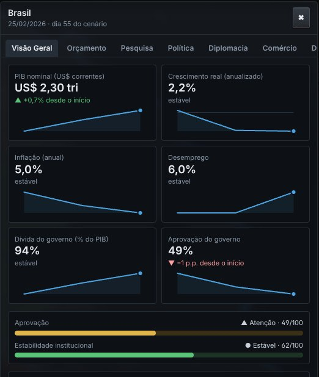
Visão Geral: PIB, crescimento, inflação, desemprego, dívida e aprovação, com gráficos.
As abas
Visão Geral — a saúde do país.
Orçamento — impostos e gastos (% do PIB).
Pesquisa — tecnologias nacionais.
Política — decretos, facções e pedidos.
Diplomacia — relações e tratados.
Comércio — compra e venda de recursos.
Diagnóstico — por que a aprovação sobe ou desce.
Dados — os números reais de partida e suas fontes.
O orçamento em palavras simples
Item
Se você aumentar…
Impostos
Mais dinheiro e menos dívida, mas o povo fica menos feliz e a economia cresce menos.
Defesa
Mais suprimentos por segundo na sua base (logística do teatro).
Educação
A economia cresce mais — mas só depois de alguns anos.
Saúde e previdência
Aprovação maior.
Infraestrutura
Crescimento e mais verba de obras (o US$ da barra, que paga melhorias e eras).
Pesquisa
Pesquisas nacionais e militares mais rápidas.
Gastar mais do que arrecada cria déficit, que vira dívida; dívida alta gera juros e freia a economia.
Aprovação e estabilidade
A aprovação mostra o quanto o povo gosta do governo. Inflação, desemprego, impostos altos e baixas na guerra derrubam a aprovação; serviços, crescimento e vitórias a levantam. Abaixo de 35 começam os protestos. A estabilidade segue a aprovação aos poucos; se ela ficar abaixo de 10 por 60 dias, o governo cai e você perde.
Decretos (aba Política)
Cada decreto tem um ganho e um preço, e vale por pelo menos 30 dias.
Decreto
Ganho
Preço
Alistamento obrigatório
Recrutas 40% mais baratos
−4 de aprovação
Economia de guerra
Produção militar 20% mais rápida
Mais inflação
Racionamento
População come 40% menos
−3 de aprovação
Lei marcial
Mais estabilidade, menos protestos
−6 de aprovação
Facções
Forças Armadas, Indústria, Agro, Sindicatos e Opinião Pública têm uma satisfação de 0 a 100 e fazem exigências com prazo de 90 dias, como "ter 2 fábricas prontas" ou "manter 400 de comida em estoque".
Cumpriu: a facção fica mais feliz, a aprovação sobe e às vezes chegam recursos de presente.
Falhou: a satisfação cai. Abaixo de 30 a facção protesta: produção militar mais lenta, coleta menor ou aprovação menor.
Fique de olho no canto superior esquerdo da tela: as exigências aparecem lá (por exemplo, "Forças Armadas exigem: ter 1 base aérea pronta no teatro em 90 dias").
Pedidos das potências
As maiores economias que você conhece podem pedir algo com prazo de 90 dias: exportar, reforçar a defesa, concluir uma pesquisa ou não declarar guerra a alguém. Cumprir dá relação +12 e ajuda financeira; falhar ou recusar piora a relação.
Comércio
Com um Terminal Comercial você compra e vende recursos com outros países. A carga viaja de caminhão, trem (Estação Ferroviária), navio (Porto) ou avião (Base Aérea). Em guerra, tropas inimigas podem destruir os comboios no caminho.
💡 Sobrando um recurso e faltando outro?Venda o que sobra e compre o que falta. É mais rápido do que construir uma coleta nova.
Mercado interno: excedente vira suprimentos
No meio da partida é comum sobrar comida, madeira, pedra e ferro e faltar suprimentos, que pagam o QG, as eras, os recrutas e as tropas. Selecione o seu Terminal Comercial (era 2): o painel dele tem o mercado interno. Escolha um recurso e venda um lote de 100 ou 500. Os suprimentos entram na hora.
Recurso
Comida
Madeira
Pedra
Ferro
Petróleo
Carvão
Preço cheio (suprimentos por unidade)
0,30
0,25
0,20
0,50
0,60
0,35
Vendendo 500 de uma vez
+121
+101
+81
+202
+243
+142
O preço cai quando você vende muito: com 1.000 unidades de um recurso vendidas há pouco, ele vale a metade. O preço atual aparece no painel (em amarelo quando está baixo).
O preço volta sozinho em cerca de 8 minutos.
Picar a venda em lotes pequenos não rende mais do que vender tudo de uma vez.
Os botões ficam apagados quando falta estoque ou quando o armazém de suprimentos não tem espaço para o pagamento.
💡 Venda vários recursos um poucoMil unidades de comida, madeira, pedra e ferro vendidas juntas pagam quase o avanço para a era 3. Vender um pouco de cada rende mais do que despejar um recurso só.
14O Globo e a diplomacia
Os países que ninguém escolheu são governados pela IA, com economia própria. Eles podem ser seus parceiros — ou do seu inimigo.
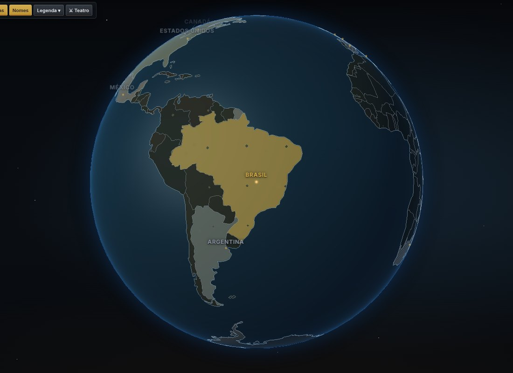
O Globo (Tab). Os botões no alto mostram política, tratados, fronteiras e nomes. Clique num país para ver as ações.
Contato
Você só negocia com quem conhece: no início, os vizinhos da sua região e o rival do teatro. Para os demais, envie uma missão de contato (custa e leva alguns dias).
Ações diplomáticas
Ação
O que faz
Acordo comercial
As duas economias crescem mais por 360 dias.
Acordo de defesa
O aliado manda ajuda militar (suprimentos por segundo) para a sua base. Exige relação alta.
Sanções
Prejudicam a economia e a aprovação do alvo. Você pode pedir a outros países que sancionem seu inimigo.
Missão diplomática
Melhora a relação aos poucos.
Ajuda
Melhora a relação rapidamente; é paga com dívida.
As relações vão de −100 a +100 e o jogo sempre mostra o motivo de cada número. Romper um acordo antes do prazo prejudica a sua reputação com todos.
Operações em outros países
Em guerra com um país que não está no seu mapa? Pelo Mapa Operacional do Globo você escolhe uma região dele e envia tropas reais da sua base. Elas viajam, lutam numa batalha local e voltam com o que sobrou. Regiões ocupadas rendem suprimentos (e petróleo, se houver).
15Força aérea e mísseis
Na era 3 o céu entra na guerra.
Base Aérea
Tem hangar para 4 aeronaves. Cada avião precisa de um recruta como piloto, gasta petróleo (ou combustível) a cada missão e tem manutenção.
Aeronave
Para que serve
Reconhecimento
Revela uma área por 40 segundos e marca os prédios inimigos vistos.
Caça multifunção
Ataca alvos já descobertos e intercepta aviões inimigos perto da sua base.
Bombardeiro (era 4)
Bombardeio em tapete: muito dano no alvo e nos prédios vizinhos. Lento e sem defesa contra caças.
Cargueiro
Amplia o comércio aéreo.
ℹ Primeiro descobrir, depois atacarCaças e bombardeiros só atacam prédios que você já descobriu (com reconhecimento, tropas ou satélite). Atacar infraestrutura exige a pesquisa nacional Munição guiada.
Defesa antiaérea
Bateria Antiaérea (fixa), Antiaérea Móvel (acompanha o exército), torres e caças prontos na base têm chance de derrubar aviões e interceptar mísseis. Mais defesas = mais chance (até um limite).
Mísseis balísticos
Pesquise Mísseis balísticos e construa um Silo de Mísseis (guarda até 2).
Produza o míssil (caro e lento).
Escolha o alvo (precisa estar em guerra com o dono), prepare, autorize segurando o botão e lance.
☢ Ogiva nuclearCom a pesquisa Armas nucleares, o silo pode produzir uma ogiva nuclear: dano enorme numa área grande e metade da chance de ser interceptada. Mas todo lançamento nuclear causa um choque na economia do mundo inteiro, inclusive na sua: o PIB cai, a inflação e o desemprego sobem e a renda da base diminui por alguns meses. Use com muito cuidado.
16Cidades, estradas e serviços
Prefeituras: funde novas cidades
A Prefeitura (aba Cívicas) funda uma cidade com o nome de uma cidade real do seu país — São Paulo, Rio de Janeiro, Salvador… Ela amplia muito a fronteira, abriga 10 pessoas, guarda recursos, rende suprimentos e serve como segundo centro de construção. Precisa ficar a pelo menos 10 células de outra cidade.
⚠ Cidades podem ser tomadasSe o inimigo destruir uma prefeitura sua, ela passa para ele, junto com os seus prédios num raio de 8 células. Você pode retomá-la do mesmo jeito. O Centro de Comando nunca é tomado: só destruído.
Estradas
Clique em Estrada (aba Cívicas do QG, ou no Engenheiro). Depois marque as células: um clique marca ou desmarca uma célula, e clicar e arrastar marca um caminho em L. No celular, cada toque marca uma célula. A prévia mostra em verde onde dá para pavimentar e em vermelho onde não dá. Para terminar, toque em Construir (ou Enter): até 40 células por obra, pagando pedra e um pouco de verba por célula. Cada célula vira um trecho de asfalto com faixa, calçada e meio-fio, e os cruzamentos ganham faixa de pedestres.
Todas as unidades andam mais rápido na estrada, e os comboios do comércio também.
Casas e prédios residenciais ligados a uma estrada dão até +4 de aprovação ("bairro pavimentado").
+15% de produção: fazendas, serrarias, pedreiras, minas, poços, refinaria e siderúrgica ligados por estrada ao Centro de Comando ou a uma prefeitura produzem 15% a mais.
Fora do território, só com um Engenheiro por perto.
Cuidado: o inimigo em guerra também usa as suas estradas.
Caravanas
Cada prefeitura pronta tem um caminhão de carga que vai e volta sozinho entre ela e o Centro de Comando. Cada chegada traz suprimentos: quanto mais longa a rota, mais carga. Na prática, uma prefeitura ligada ao QG quase dobra o que rende.
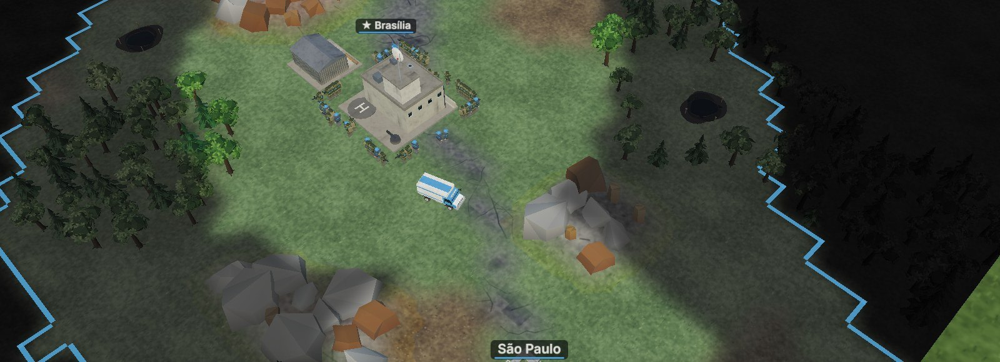
A caravana (caminhão branco) na estrada entre Brasília e São Paulo.
⚠ A caravana só anda por estradaEla precisa de uma estrada contínua, sem buracos, encostando no Centro de Comando e na prefeitura. A estrada de terra do mapa também vale. Sem ligação, o caminhão fica parado e a prefeitura rende só a renda fixa. Território inimigo em guerra no meio do caminho corta a ligação, e tropas inimigas destroem a caravana (outra sai do QG em 45 s).
Serviços
Funcionam num raio de 10 células (o anel verde aparece ao posicionar) e cada um dá até +2 de aprovação.
Serviço
Era
Efeito na área
Escola
1
Coletas rendem 10% a mais; tropas formadas por perto já saem Veteranas.
Delegacia
1
Protestos pesam menos na estabilidade.
Hospital
2
Tropas suas na área recuperam vida aos poucos.
💡 Escola perto do quartelUma escola cobrindo a Base Militar e a Fábrica faz todas as tropas novas nascerem Veteranas: +10% de dano e +8% de vida de graça.
17Energia elétrica
Quartéis, fábricas e defesas modernas precisam de luz. Sem energia, eles param por completo.
As usinas
Usina
Era
Energia
Como funciona
Termelétrica a Carvão
1
24
Queima carvão conforme o uso (até 0,6 por segundo). Barata e forte, mas sem carvão ela apaga.
Parque Eólico
2
até 12
Sem combustível; rende de 35% a 130% conforme o vento, que muda devagar.
Usina Solar
3
até 25
Sem combustível; só de dia (nada à noite).
Hidrelétrica (Grande Projeto)
4
90
Fonte grande e limpa de fim de partida.
Usina Nuclear (Grande Projeto)
4
150
A maior fonte do jogo.
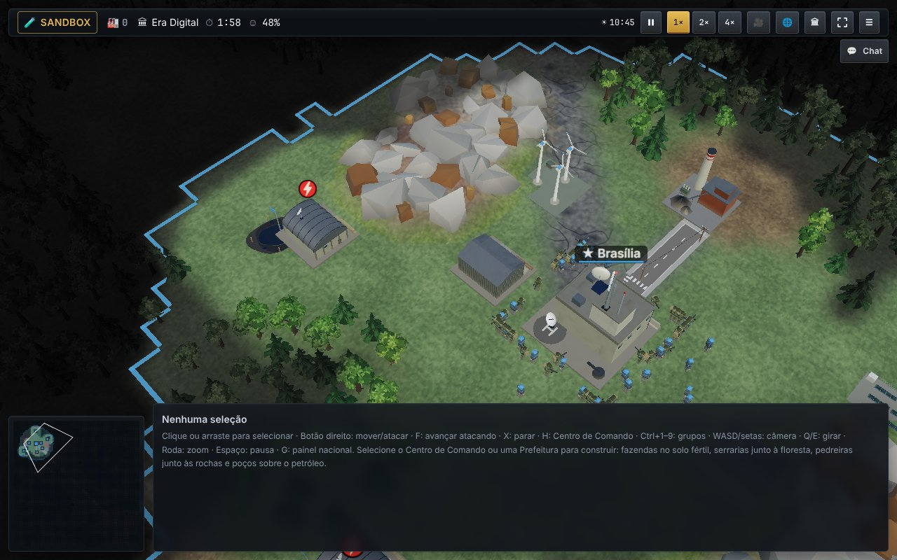
Termelétrica, parque eólico e usina solar perto do QG. O quartel à esquerda ficou longe da rede: o ⚡ vermelho mostra que ele está parado.
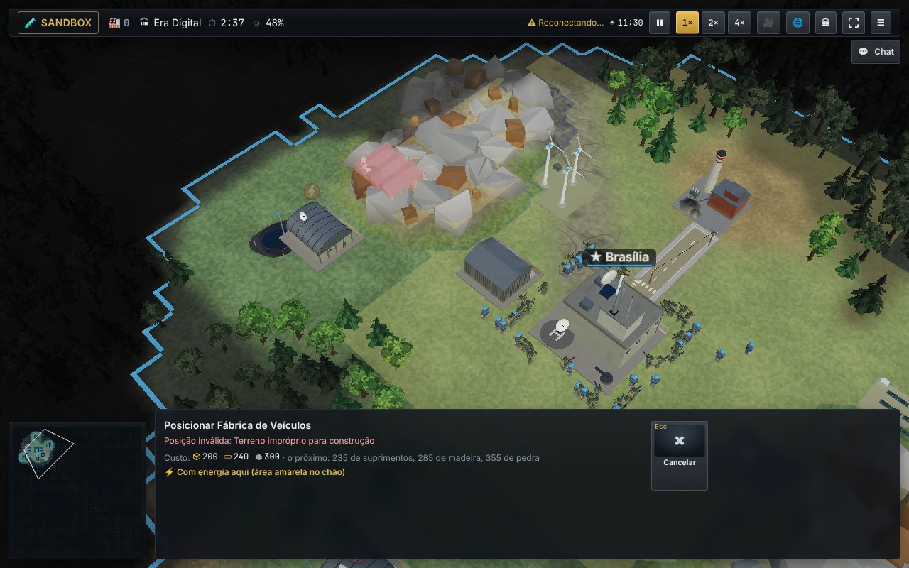
Ao posicionar, a área com energia fica amarela no chão e o painel avisa "⚡ Com energia aqui".
A energia anda pelas estradas
A rede é formada pelas suas estradas, pelo Centro de Comando e pelas usinas. As estradas ganham postes e fios.
Uma construção a até 4 células da rede recebe luz. Ao posicionar, essa área aparece amarela no chão.
Pedaços de estrada separados são redes separadas: uma usina só alimenta o que está ligado a ela.
Se falta geração, as construções mais novas apagam primeiro; as mais antigas ficam com a luz.
Quem usa energia
Param sem luz
Consumo
Não param, mas o povo reclama
Consumo
Base Militar
3
Casa
1
Fábrica de Veículos
6
Prédio Residencial
2
Centro de Pesquisa
5
Hospital
3
Base Aérea
8
Escola, Delegacia, Prefeitura, Terminal
2 cada
Silo de Mísseis / Domo de Ferro
5 / 6
Rede 5G / Centro Financeiro
10 / 6
Bateria Antiaérea
2
Programa Espacial
16
Refinaria / Siderúrgica
5 / 6
O Centro de Comando, as coletas, os armazéns e as torres não usam energia: a economia básica nunca trava. Casas com luz dão até +3 de aprovação; bairros no escuro tiram até −6.
⚠ ApagãoQuando algo para sem luz, aparece um ⚡ vermelho piscando sobre a construção, o medidor de energia fica vermelho e chega o aviso "Apagão" com o motivo: falta de usina (ou de carvão) ou construção longe da rede.
💡 Ataque a energia do inimigoDestruir uma termelétrica, cortar a estrada que leva a luz ou acabar com as minas de carvão do rival desliga os quartéis e as fábricas dele. A IA faz o mesmo com você: proteja as usinas com antiaérea.
ℹ Carvão sobrando ou faltando?O carvão pode ser comprado e vendido no mercado interno do Terminal Comercial. Com pouco carvão, prefira eólica e solar.
18Grandes Projetos e Programa Espacial
Na era 4, obras gigantes dão bônus para a nação inteira. Uma de cada por país.
Projeto
Bônus enquanto estiver de pé
Usina Nuclear
+4 suprimentos/s, obras 10% mais rápidas, economia cresce mais
Rede 5G Nacional
Pesquisa militar 30% mais rápida, +2 de visão para todas as tropas
Hidrelétrica
+15% na coleta de todos os recursos, +2 suprimentos/s (na margem da água)
Centro Financeiro
Verba de obras 50% maior, +3 suprimentos/s
Programa Espacial 🛰
Lança um satélite: você vê o mapa inteiro em tempo real
🚀 O Programa Espacial
É a construção mais cara do jogo: cerca de 1.950 suprimentos, 1.560 de ferro, 1.040 de pedra, 780 de madeira, 780 de petróleo, quase toda a verba de obras do ano e 6 minutos de obra. Exige o QG no nível 9 e a pesquisa Tecnologia espacial.
Com a obra pronta, selecione o centro espacial e segure o botão de autorizar.
Contagem regressiva de 10 segundos, com vapor saindo da plataforma.
Ignição: clarão, fumaça, tremor — e o foguete sobe até sumir no céu.
O satélite entra em órbita e aparece girando em volta do Globo, com a sua bandeira, para todos verem.
A partir daí, a névoa de guerra some para você: todas as tropas e prédios inimigos ficam visíveis e viram alvos para aviões e mísseis. Só as minas terrestres continuam escondidas.
⚠ Proteja o investimentoOs Grandes Projetos são alvos enormes. Cerque-os de antiaérea e tropas: se um for destruído, o bônus acaba.
19O bônus de cada país
Todo país tem uma vantagem própria. Escolha o que combina com o seu jeito de jogar.
País
Bônus
Efeito
🇧🇷 Brasil
Guerra na selva
Tropas 25% mais rápidas na floresta; metade do atrito em terra inimiga
🇦🇷 Argentina
Celeiro do mundo
+25% de comida
🇺🇸 Estados Unidos
Logística aérea
Aeronaves 30% mais baratas
🇲🇽 México
Indústria de montagem
Veículo Blindado 20% mais barato
🇩🇪 Alemanha
Engenharia blindada
Tanques com 15% mais vida
🇫🇷 França
Força de intervenção
Forças Especiais e Antitanque 20% mais baratas
🇮🇳 Índia
Grande reserva humana
Recrutas 25% mais baratos
🇯🇵 Japão
Eficiência industrial
Obras 15% mais rápidas
🇿🇦 África do Sul
Minerais estratégicos
+30% de ferro
🇦🇺 Austrália
Mineração em escala
+20% de pedra e ferro
🇬🇧 Reino Unido
Forças especiais de elite
Forças Especiais com +20% de vida e 15% mais baratas
🇨🇳 China
Produção em massa
Tropas produzidas 20% mais rápido
🇮🇹 Itália
Engenharia civil
Obras 12% mais rápidas e +10% de pedra
🇨🇦 Canadá
Recursos florestais
+25% de madeira
🇸🇦 Arábia Saudita
Petróleo abundante
+30% de petróleo
🇪🇸 Espanha
Infantaria de montanha
Infantaria 15% mais barata e +10% de vida
🇪🇬 Egito
Muralha antiaérea
Antiaérea própria 20% mais eficaz
🇷🇺 Rússia
Artilharia em massa
Artilharia e Lança-Foguetes 25% mais baratos
🇹🇷 Turquia
Indústria de defesa
Antiaérea Móvel e Blindado 15% mais baratos
🇰🇷 Coreia do Sul
Defesa antiaérea superior
Antiaérea própria 30% mais eficaz
🇰🇵 Coreia do Norte
Exército de massa
Artilharia 20% e recrutas 15% mais baratos
O bônus aparece no cartão do país na sala. Cada país também tem uma região inicial (florestal, petrolífera, agrícola…) que muda os recursos perto da base.
20Dicas de estratégia
Os 10 mandamentos do comandante
Nunca pare de formar cidadãos no começo. Gente parada é economia parada.
Ache o seu gargalo. O recurso que mais falta decide o que construir a seguir.
Não deixe recurso encostado no limite. Armazém cheio é produção jogada fora.
Melhore o Centro de Comando cedo: ele destrava eras e melhorias de todo o resto.
Explore. Saber onde estão o inimigo e as jazidas vale mais que um tanque.
Defenda-se antes do fim do preparo. A primeira onda da IA chega pontualmente.
Misture tropas. Um exército de um tipo só tem um contra óbvio.
Dê visão à artilharia. Sem olhos, ela não atira.
Cuide do povo. Baixas demais, impostos altos e fome derrubam a aprovação — e o governo.
Use a diplomacia. Um acordo de defesa manda suprimentos de graça; sanções enfraquecem o inimigo sem gastar uma bala.
Erros comuns de iniciante
Poço sem tanqueO poço de petróleo só funciona com um Tanque de Petróleo a até 9 células.
Sem recrutasClicou na tropa e nada? Falta recruta na reserva. Aliste na Base Militar.
Atacar sem guerraAs tropas não atiram? Declare guerra no Globo primeiro.
Exército longe de casaTropas em terra inimiga perdem vida. Leve um Veículo Blindado junto.
Quartel no escuroConstruiu longe da estrada e a produção não anda? Veja o ⚡ vermelho: leve estrada até lá ou construa na área amarela.
Usina só a carvãoSem mina, o carvão acaba e tudo apaga. Construa uma mina cedo ou misture eólica e solar.
Três estratégias para experimentar
⚡
Ataque rápido
Economia mínima, muitos soldados e blindados, ataque logo depois do preparo. Bom contra quem constrói devagar.
🏗
Economia forte
Muitas coletas e melhorias, defesa com torres e antitanque, avanço rápido de eras. Vence no longo prazo.
🗺
Expansão
Prefeituras e estradas para dominar o mapa. Pode levar à vitória territorial (70% do mapa).
21Glossário
Termo
Significado
Caravana
Caminhão que leva suprimentos entre uma prefeitura e o QG; só anda por estrada.
Atrito
Perda de vida das tropas em território inimigo sem um blindado por perto.
Centro de Comando (QG)
A sua capital no mapa. Se cair, você perde.
Custo crescente
Cada construção nova do mesmo tipo custa 18% a mais.
Apagão
Construções paradas por falta de energia (pouca geração ou longe da rede).
Depósito
Grupo de células de um recurso (floresta, rocha, minério, jazida). Acaba com o uso.
Era
Etapa da evolução da nação; libera tropas, prédios e muda o visual.
Especialização
Escolha permanente feita no nível 6 de um prédio.
Estabilidade
A firmeza do governo. Abaixo de 10 por 60 dias, o governo cai.
Gargalo
O recurso que mais limita o seu crescimento no momento.
Incidente de fronteira
Assédio rápido da IA durante o preparo, sem guerra declarada.
Mercado interno
Venda de excedente por suprimentos no Terminal Comercial; o preço cai com as vendas e volta com o tempo.
Logística do teatro
Suprimentos por segundo que o orçamento de defesa manda para a base.
Rede elétrica
Estradas, Centro de Comando e usinas; leva luz até 4 células em volta.
Névoa de guerra
A parte do mapa que você não está vendo agora.
Sala pública
Sala multijogador que aparece na lista de Salas Públicas do menu.
Paridade / Escala real
Regras da sala: todos iguais, ou países ricos mais fortes.
Período de preparo
Os primeiros minutos, em que a IA não declara guerra.
Recruta
Pessoa na reserva militar; tripula cada tropa ou avião.
Teatro de operações
O mapa 3D da partida.
Verba de obras (US$)
Dinheiro do orçamento de infraestrutura que paga melhorias, eras e projetos.
Veterania
Patente ganha com abates: Veterano, Elite e Herói.
Boa sorte, Comandante!O melhor jeito de aprender é jogar. Comece no Fácil, teste tropas no Modo Sandbox e volte a este guia sempre que tiver dúvida.